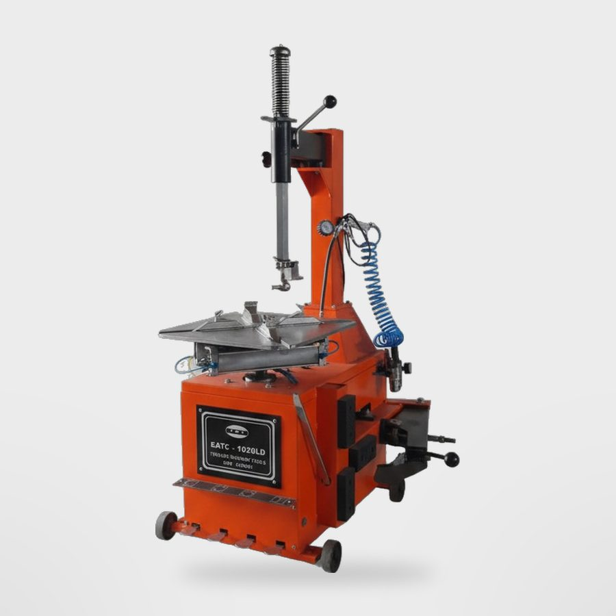

About us
We make automatic service machines for the tyre trade.
Our works are at the Government Industrial Estate in Ollur, Thrissur. We build tyre changers for cars, two-wheelers, lorries and trucks, along with the equipment that goes with them in a tyre shop: edge removers, tyre expanders, tube vulcanisers, nitrogen inflators, air compressors, lifts and jacks.
We sell directly to tyre shops and service centres. Call or WhatsApp us and you speak to the people who build the machines.

What goes into a TMT tyre changer
Cheaper machines save money on the parts that wear out first. We use parts that last and that can be repaired, so the machine keeps working for years.
- Cylinder
- Aluminium alloyDoes not rust, unlike mild steel cylinders
- Seal
- TDU sealBetter sealing, less leakage under heavy use
- Motor
- Crompton GreavesA trusted Indian motor brand built for long life
- Gears
- PB materialLasts longer than brittle cast iron gears
- Valves
- High-quality valvesLong life, and they can be repaired
- Air bearing
- MetalLasts longer than plastic, and can be repaired
- Pedals
- 4 pedal controlFiner control for the operator, easy to repair
Why tyre shops choose TMT
Made in India
Designed and manufactured at our own facility in Ollur, Thrissur, ensuring consistent quality and ready availability of spares and service.
Fully serviceable
Key components such as valves, air bearings and pedals are fully serviceable, reducing downtime and lowering the total cost of ownership.
Complete workshop solutions
A single source for tyre changers, air compressors, nitrogen inflators, vehicle lifts and jacks.